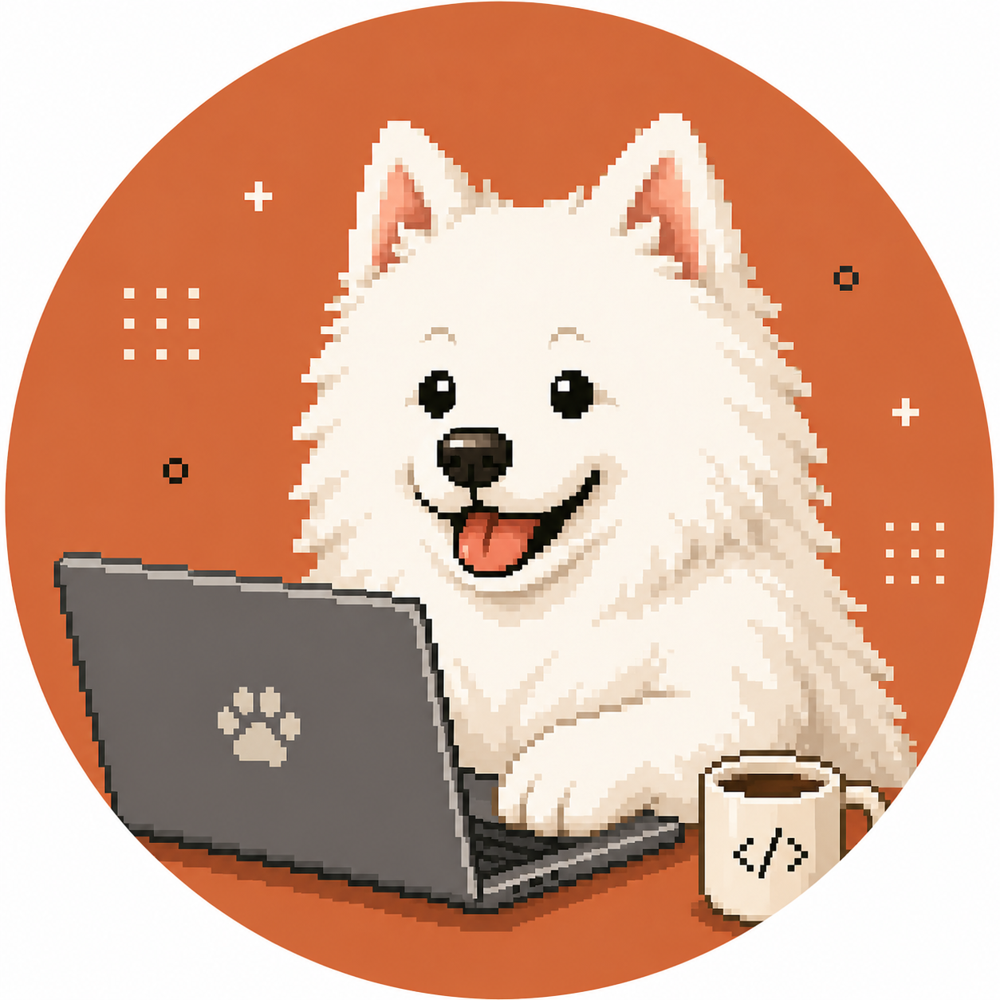

ClaudeCodeチャンネルClaude Code を学ぶ
2026年最大のM&A
SpaceX × Cursor
買収劇 徹底解説
9兆円が動いた。AIコーディングツールの覇権争いを読み解く
</> 2026年版
ClaudeCodeチャンネル1
ClaudeCodeチャンネルClaude Code を学ぶ
まず3行で
結論
POINT 1
SpaceXが最大600億ドルでCursorを買収する権利を取得。最低でも100億ドルは確定済み ✅
POINT 2
Cursorは創業4年でARR 20億ドル超・有料ユーザー100万人超。SaaS史上最速クラス ✅
POINT 3
本質は「ツールの取得」ではなく「開発者の入口」を巡るAI覇権争いの延長線
TL;DR2
ClaudeCodeチャンネルClaude Code を学ぶ
CONTENTS
この資料の流れ
- 1何が起きた？ 取引の概要
- 2Cursorとは？ 急成長の実態
- 3SpaceXが買う3つの理由
- 4600億ドルは高い？安い？
- 5AIコーディング市場の構造変化
- 6Claude Codeとの位置づけ
- 7開発者への影響
- 8Truellという人物と今後
目次3
ClaudeCodeチャンネルClaude Code を学ぶ
01
2026年4月22日、何が起きた？
- SpaceXが、AIコーディングツール「Cursor」（Anysphere社）の買収権を取得 ✅
- 行使価格 600億ドル（約9兆円）、株式交換方式 ✅
- 買わなかった場合でも共同開発の対価として 100億ドル（約1.5兆円）確定 ✅
- 完了予定：2026年第3四半期、規制当局の承認を条件 ✅
取引概要4
ClaudeCodeチャンネルClaude Code を学ぶ
02
Cursorとは？
VS Codeをフォークして作られた「AIネイティブな開発環境」。自然言語でコード生成・修正・バグ修正が行える ✅
「GitHub Copilotの次世代版」として開発者から高評価。OpenAI・Midjourney・Perplexityのエンジニアも愛用 ✅
できること
- 自然言語でコード生成・修正
- リファクタリング・バグ修正
- 大規模コードベースの理解
- 複数モデル（Claude/GPT等）を選択可能
Cursorとは5
ClaudeCodeチャンネルClaude Code を学ぶ
02
SaaS史上最速クラスの成長
20億ドル
ARR（2026年2月）✅
1年前の20倍
67%
Fortune 500の採用率 ✅
3社に2社が利用
ARR 1億ドル到達
1年8ヶ月
Dropbox 4年 / Slack 2.5年
1日あたりのコード生成
1.5億行+
企業コードベースで ✅
評価額の変化
2.5億→600億ドル
2年で240倍 ✅
成長指標6
ClaudeCodeチャンネルClaude Code を学ぶ
買収の本当の狙い
03SpaceXが買う3つの理由
1
xAIの弱点補強
Grokはチャット強いが開発支援は弱い。AIエージェント技術・UI/UX・コードデータを一気に獲得 🔶
2
開発者の入口獲得
100万人の開発者接点を手に入れる。Grok → Cursor → 開発者 → 企業契約の循環を狙う 🔶
3
Colossus統合
xAIの巨大計算基盤とCursorを統合。AnthropicへのAPI依存から脱却し自社モデルを育てる 🔶
買収の3つの狙い7
ClaudeCodeチャンネルClaude Code を学ぶ
03
「開発者の入口」戦争
OpenAI
ChatGPT
汎用ユーザー向け入口
Anthropic
Claude Code
開発者向け入口
Microsoft
GitHub Copilot
企業開発者向け入口
SpaceX/xAI
Cursor（取得）
100万人の開発者を一気に獲得！
AI競争は「どこから入るか」が命——SpaceXに唯一なかった入口を埋めた 🔶
入口戦争8
ClaudeCodeチャンネルClaude Code を学ぶ
04
600億ドルは高い？安い？
| 買収 | 金額 | 創業からの年数 | 評価 |
|---|
| Instagram → Meta | 10億ドル | 約2年 | 当時「高すぎ」と言われた |
| GitHub → Microsoft | 75億ドル | 約8年 | 開発者プラットフォーム評価 |
| LinkedIn → Microsoft | 262億ドル | 約13年 | ビジネスSNS覇権 |
| Cursor → SpaceX | 600億ドル | 約4年 | AI覇権・開発者入口評価 |
ARR 20億ドルに対して30倍のバリュエーション。現在の収益でなく「将来の開発者プラットフォーム価値」を折り込んでいる 🔶
バリュエーション比較9
ClaudeCodeチャンネルClaude Code を学ぶ
04
Cursorの構造問題
今のCursor
- ユーザーから月額料金を受け取る
- ほぼ全額をAnthropicのAPI代として支払う 🔶
- 構造的な赤字を抱えている
- 成長するほどAPI費用も増える
→
SpaceX傘下後
- Colossusの計算資源でモデルを自社開発
- Grokベースの自前モデルが可能 🔶
- APIコスト依存からの脱却
- 収益構造が根本から変わる
構造問題10
ClaudeCodeチャンネルClaude Code を学ぶ
05
AIコーディング市場の構造変化
旧パラダイム（ツール型）
- 人間が主導、AIに質問しながら書く
- 従来のCursorはここに位置
- 使いやすいが時代から外れつつある
→
新パラダイム（AIエージェント型）
- 人間は指示・承認・修正のみ
- 複数AIが自律的にコードを作成
- Claude Code / Codex がここを目指す
AIエージェントでエンジニア生産性は理論上10倍に。AIコーディング市場は2026年に128億ドル規模へ 🔶
市場の構造変化11
ClaudeCodeチャンネルClaude Code を学ぶ
06
Claude Codeとの位置づけ
| ツール | 運営 | 強み | 注意点 |
|---|
| Cursor（買収後） | SpaceX/xAI | 100万人開発者・ブランド力 | モデル中立性喪失リスク |
| Claude Code | Anthropic | エージェント型・企業向け・Claude連携 | 成長途上 |
| GitHub Copilot | Microsoft | エンタープライズ実績 | エージェント化対応速度 |
| OpenAI Codex | OpenAI | ChatGPT連携・ブランド | コーディング専業でない |
CursorがGrok専用に近づけば、Claude Codeが開発者の受け皿になれる可能性 🔶
競合マップ12
ClaudeCodeチャンネルClaude Code を学ぶ
06
開発者への影響
○ ポジティブ
- Colossusの計算資源でモデル強化
- AIエージェント機能の拡充
- Grokとの直接統合
△ ネガティブ
- ×xAIへの囲い込みリスク
- ×Claude・GPT連携縮小の可能性
- ×価格変更・名称変更の可能性 🔶
最大の注目点は「モデル選択の自由度がどこまで保たれるか」 🔶
開発者への影響13
ClaudeCodeチャンネルClaude Code を学ぶ
07
Michael Truell — 25歳の起業家
14歳「Halite」共同開発100ヶ国・5,500人超が参加。Two Sigmaが運営引き継ぎ ✅
高校IOIでメダル複数獲得 / Cutler-Bell Prize受賞（17歳）米国高校生プログラマー最高賞の一つ ✅
22歳MIT中退・Anysphere共同創業2022年。ChatGPT登場前からAIコーディングに賭けた ✅
25歳SpaceXと最大9兆円の契約2026年4月。個人資産13億ドル（Forbes推定）✅
Michael Truell14
ClaudeCodeチャンネルClaude Code を学ぶ
07
最初のアイデアは失敗していた
最初の構想
「機械エンジニア向けCopilot」。ニッチで競争が穏やかだったから ✅
→
頓挫
約半年でアイデアが次々と失敗。他のプロジェクトも行き詰まる ✅
→
決断の瞬間
「競争が激しすぎる」と避けていたAIコーディングに飛び込むと決める ✅
→
Cursor誕生
プラグインでなくVS Codeをフォークした「AIネイティブ環境」を作る ✅
「ものすごい確信と興奮があった。ある時点で、僕らはただ"やる"と決めたんだ」— Truell ✅
創業の軌跡15
ClaudeCodeチャンネルClaude Code を学ぶ
07
Truellが語る「自動化はまだ遠い」
現状
- 見出しほど自動化は進んでいない
- ソフト開発は今もかなり非効率
中間地帯
- 大規模組織ほど自動化の難度が高い
- 経営層は到達距離を見誤りやすい
- 長い「中間地帯」が本当の課題
次の転換
- 市場は今「iPod段階」に入りつつある
- 「iPhone段階」が何度も来る
9兆円の買収劇の主役が語る「慎重な現実認識」— 過熱するマーケティングへの異論 ✅
Truellの発言16
ClaudeCodeチャンネルClaude Code を学ぶ
08
次のモデルと今後の見通し
Composer 3（噂） 🔶⚠️
- ゼロからの独自モデルを訓練中
- Grokを基盤モデルとして活用の可能性
- 「コーディングを超えた知性」を目指す
- 数週間以内にリリース⚠️（未確認）
iOSアプリ 🔶
- リリース予定あり
- Android版は遅れる見込み⚠️
ロードマップ
2026年末買収権の行使期限行使か提携にとどまるかが決まる 🔶
その後三つ巴の戦い本番xAI/Cursor vs Anthropic vs OpenAI
今後の見通し17
ClaudeCodeチャンネルClaude Code を学ぶ
まとめ
「SpaceXがCursorを買った」ではなく
「MuskがOpenAI・Anthropicに対抗するための時間を買った」
- AIコーディング市場は「開発者の入口」を巡る覇権争いに突入している
- Cursorの中立性喪失はClaude Codeに追い風になりうる
- Truell自身が「自動化はまだ遠い」と語る——冷静な目を持ち続けることが重要
まとめ18
ClaudeCodeチャンネルClaude Code を学ぶ
もっと学ぶ
全文（出典つき）と配布用の1枚資料は概要欄から
</> チャンネル登録でもっと学ぶ
出典: SpaceX公式発表（2026年4月22日）✅ ／ Fortune・CNBC報道 🔶 ／ 本資料は非公式まとめ・Cursor/SpaceXとは無関係
CTA・出典19
1 / 19